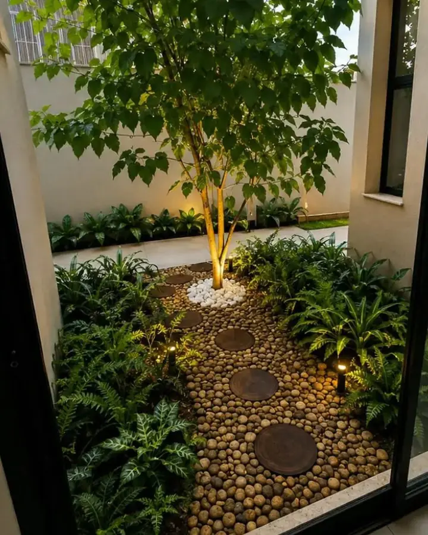

Serviço
Manutenção de jardins que mantém o jardim.
Todo jardim bonito que você viu virar mato tinha projeto bom e manutenção nenhuma. Jardim não é obra que termina — é sistema vivo que precisa de calendário.

O que a visita inclui
- Poda técnica. Cada espécie tem sua época e seu tipo de corte. Poda na hora errada tira a floração do ano; poda malfeita abre porta para doença.
- Adubação. Reposição de nutrientes conforme a fase da planta e a época do ano. Canteiro sem adubação empobrece e a folhagem vai perdendo cor.
- Controle fitossanitário. Identificação e tratamento de praga e doença enquanto ainda é pontual — depois que espalha, o custo é outro.
- Replantio pontual. Troca de muda que não se estabeleceu ou que se perdeu, para o canteiro não abrir falha.
- Limpeza. Retirada de folha, poda de manutenção do gramado e recolhimento do material.
Assumimos jardim que não é nosso
Não precisa ter sido projeto da Vértice. Assumimos jardins existentes, inclusive feitos por terceiros. O processo é:
- Diagnóstico. O que está saudável, o que está doente, o que está no lugar errado e o que não tem salvação.
- Plano de recuperação, se for o caso — que é um trabalho pontual, com começo e fim, antes de entrar na rotina.
- Visitas programadas, com frequência definida conforme o porte e o tipo do jardim.
Para condomínios e empresas
Área comum tem uma exigência a mais: previsibilidade de custo. O contrato mensal fecha o valor do ano e o relatório de visita documenta o que foi feito — que é o que o síndico precisa ter na mão na hora da prestação de contas.
Seu jardim está perdendo a forma?
Mande uma foto de como está hoje. A gente diz se é caso de recuperação ou se manutenção regular já resolve — e quanto custa cada caminho.
Quero meu orçamento grátisDúvidas frequentes
Sobre manutenção de jardins
De quanto em quanto tempo é a visita?
Posso contratar só a manutenção, sem ter feito projeto com vocês?
Se uma planta morrer, vocês repõem?
Vocês atendem condomínio com contrato mensal?
Existe visita avulsa?
Continue
Outros serviços
Projeto de Paisagismo
Projeto exclusivo para o seu espaço: conceito, distribuição de canteiros, lista de espécies, iluminação e acabamentos.
Ver mais →Execução & Plantio
Preparo e correção de solo, drenagem, irrigação, plantio e acabamento. Executamos o que projetamos — sem terceirizar a mão de obra.
Ver mais →Jardins Verticais
Verde onde não existe chão. Painéis naturais ou preservados para fachadas, muros, halls e ambientes internos.
Ver mais →